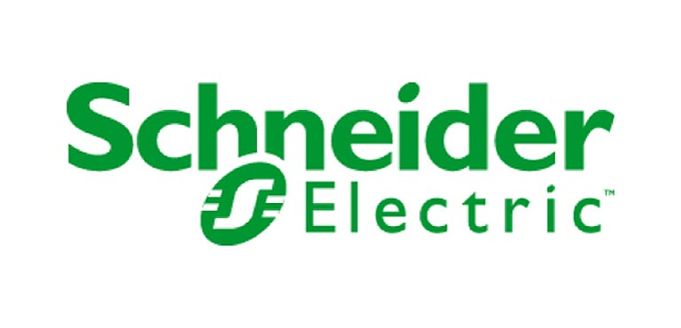

Schneider Electric
As a global specialist in energy management and automation with operations in more than 100 countries, Schneider Electric offers integrated solutions across multiple market segments, including leadership positions in nonresidential and residential buildings, industries and machines manufacturers, utilities and infrastructure, and data centers and networks. Focused on making energy safe, reliable, efficient, productive, and green, the group's 170,000 employees achieved revenues of 25 billion euros in 2014 through an active commitment to helping individuals and organizations make the most of their energy.
In conjunction with this mission, Schneider Electric is proud to be a sustaining sponsor of the U.S. Department of Energy Solar Decathlon since 2009. Schneider Electric supplies the microgrid solution that enables a safe and reliable electrical connection between the solar village and the utility service during the event. Schneider Electric is also committed to communities where we live and work and, therefore, is also providing at least 100 employee volunteers to staff the event.
Since 2010, Schneider Electric has also sponsored four international Solar Decathlon competitions, including the Solar Decathlon Latin America and Caribbean competition being held in December 2015.